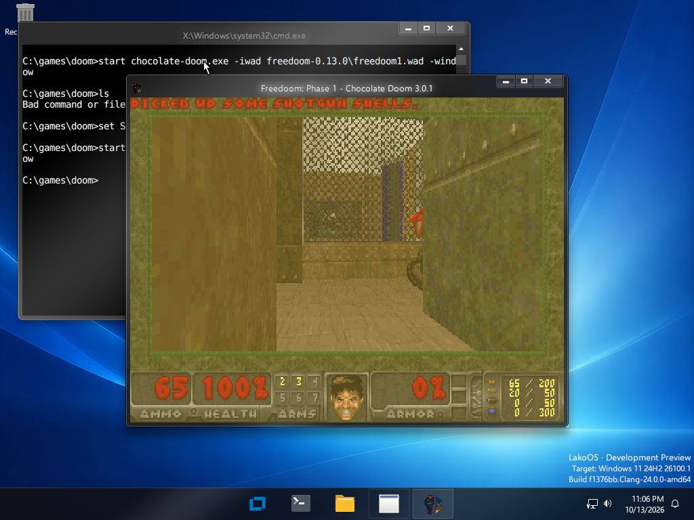
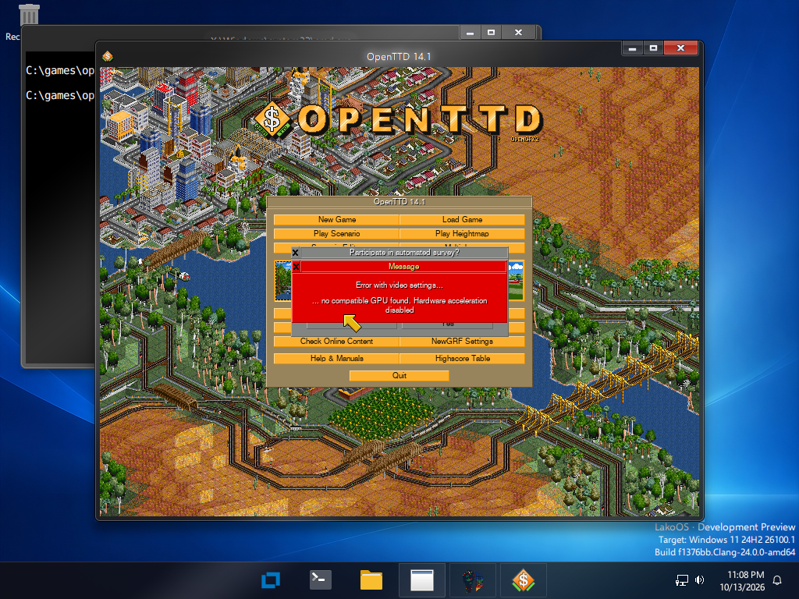
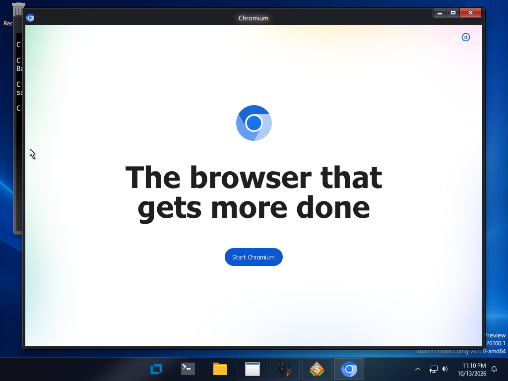

What works today, stated plainly.
| Area | Status |
|---|---|
| Chromium browser | Starts, browses HTTPS (software rendering) |
| SDL2 games (32-bit via WoW64) | Chocolate Doom plays |
| OpenTTD | Runs |
| DirectX 9 to 12 | Start on a software renderer, feature level 11.0; slow |
| DXVK | Runs on the software Vulkan driver |
| Steam client | Installs, cannot go online yet |
| Command line tools | Work |
| Third-party drivers | Wintun loads; others partly checked |
| UWP and WinUI apps | Not supported |


